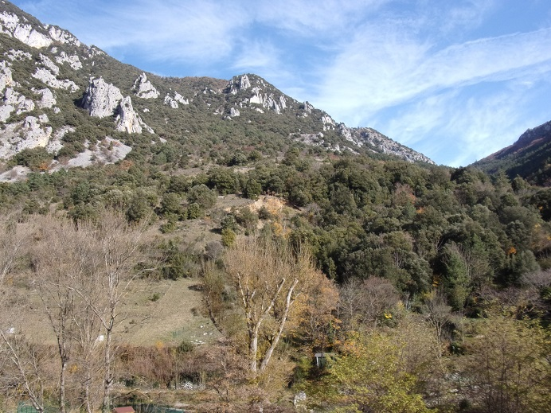

Toute la rive droite du ruisseau du Pount (col de Saint Martin - source) jusqu'au contrefort du Gal (et ses précipices vertigineux) est toujours recouverte d'herbes hautes, mais très peu d'arbres, contrairement à toute la rive gauche qui elle est retournée à la forêt. Pourtant ces 2 espaces ont dû être défrichés, puis abandonnés aux mêmes époques.


vue aérienne du haut de Saint Martin Lys
Remarquer la fracture entre la zone reprise par la forêt, flanc nord est du cap de fer (la partie la plus fertile du haut de Saint Martin) et la partie herbeuse de l'autre coté du ruisseau.
Il est amusant de voir, en comparant les 2 photos, que les haies (bien alignées des années 50 de ce dernier flan de montagne) subsitent quasiment à l'identique, a peine plus touffues...
Cette partie herbeuse était précédemment occupée par la vigne, seule culture pouvant encore s'accrocher à cette terre ravinée. Etagée sur tout le coteau avec des petites parcelles limitées par des murets de pierres sèches permettant d'adoucir la pente et ainsi faciliter l'entretien.

Carte postale ancienne du village et les terrains aménagés pour la culture de la vigne
La réputation du vin de Saint Martin n'était plus à faire. Tout le coteau était occupé comme le montre le plan cadastral.

Plan cadastral du haut de Saint Martin
Montre la taille et la direction "historique" des différentes parcelles de vigne
Mais ces terrains, comme partout ailleurs en France, ont souffert du phylloxéra. De plus les conditions de culture particulièrement difficiles sur des coteaux aussi pentus ont amené à un abandon assez rapide de ces terres à la friche. Aussi aujourd'hui à part par quelques pieds d'asperges sauvages, de thym et par quelques chênes truffiers, cet espace n'est plus occupé que d'herbes hautes.
La dernière vigne du coteau a été entretenue par mon grand-père qui tirait de ses quelques pieds suffisamment de raisins pour faire sa piquette de l'année (quand les raisins n'étaient pas mangés par le blaireau, le grand ennemi de Joseph. Car l'animal une fois qu'il avait repéré ce garde-mangé, venait quasi quotidiennement se substenter... Jusqu'au moment où il finissait dans les griffes du piège monté par mon grand-père).
La vendange était l'occasion de réunir la famille, même si mon grand-père se chargeait seul de la cueillette, vue la taille de la vigne. On mettait tout dans la grande bassine et s'était mon arrière grand mère qui se collait au pietinage.
En limite de ces champs, en continuant le chemin du Gal vers Lillette, se trouve la muraille rocheuse qui accuillait tant de colonies d'Abeille que la montagne en ruisselait de miel.

le gal - les infractuosités à miel
Sur tout le versant sud de ce rocher les abeilles s'étaient installées
D'après mon grand-père, le rocher brillait de miel

la paroi verticale du gal, longeant l'Aude
le chemin qui longe cette falaise conduit à la Grotte / Ermitage de Félix Armand, puis continue vers les champs de bord d'Aude de Lillette et vers l'ancien village.
Après une longue période de pluie, le soleil était enfin revenu. Aussi au village on profitait de l'occasion pour aller à la rivière faire toute la lessive de retard que la pluie avait empéchée. Avec autant de linge à sécher, Janinette avait décidé de profiter de son ancienne vigne pour étaller tout son linge dans l'herbe fraiche, espérant en finir au plus vite. Mal lui en pris, car c'est le jour que choisirent aussi les sources de la montagne pour déclancher un écoulement de terrain. Les draps furent emportés par la coulée de boue qui s'est détachée de la montagne. Comme une ligne de jet tombant en cascade, du plus haut de l'éboulement, l'eau claire a commencé à jaillir sans retenue. Mais trop tard pour nettoyer les pauvres draps emportés.
Aujourd'hui encore, il est possible de voir dans le coteau cet espace terreux qui s'est effondré, bien en dessous du niveau de la source qui alimente le village.

Depuis longtemps je n'avais pas vu d'eau couler là, même si dans ma jeunesse j'avais pu assister moi-même à ces jets d'eau, quand la pluie d'automne avait été abondante.
Suite aux pluies diluvienne du 23 janvier 2020, toutes les sources de la montagne se sont mises à couler, une coulée de Boue à la pêcherie à même bloquée la route. Et bien sûr notre montagne à coulée elle aussi

La "source" de l'ancien éboulement, photo prise le 25/01/2020. Le 26, elle coulait encore alors que le ruisseau longeant la station d'épuration était, lui, tari...
(Je ne suis pas allé voir où elle s'infiltre, mais l'information aurait mérité d'être creusée...)
Remarque finale : Le Courrier de l'Aude du 31/12/1897 indique une surface de 4 hectares de Vigne à St Martin (de Taissac...) pour une production en 1896 de 20 hectolitres, mais plus que 12 hectolitres en 1897 (40 hectolitres en 1884 (CdA du 19/03/1895), 15 hectolitres en 1885 (Cda du 12/02/1896) - les chiffres donnés par le Vigneron Narbonnais (30/12/1886) sont différents ). La diminution de la production est-elle due au Phylloxéra ?